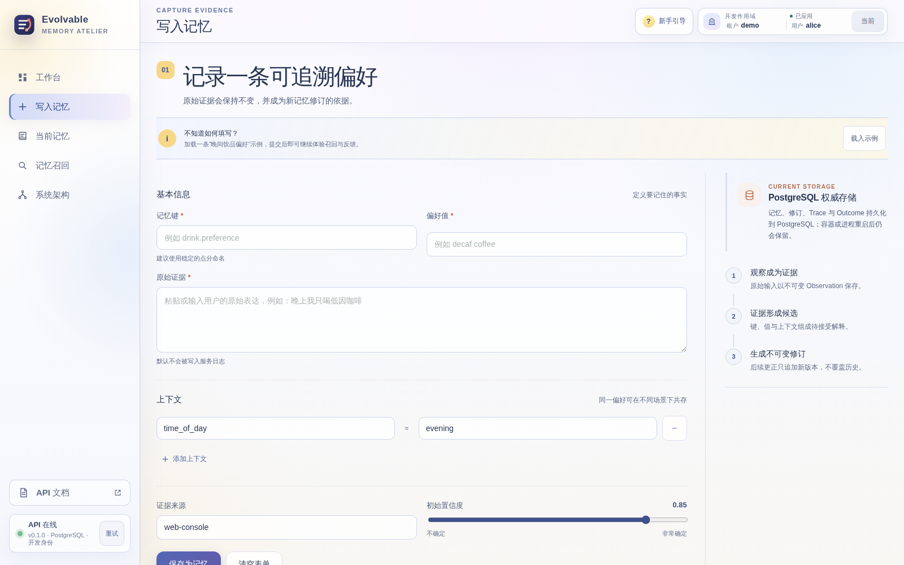
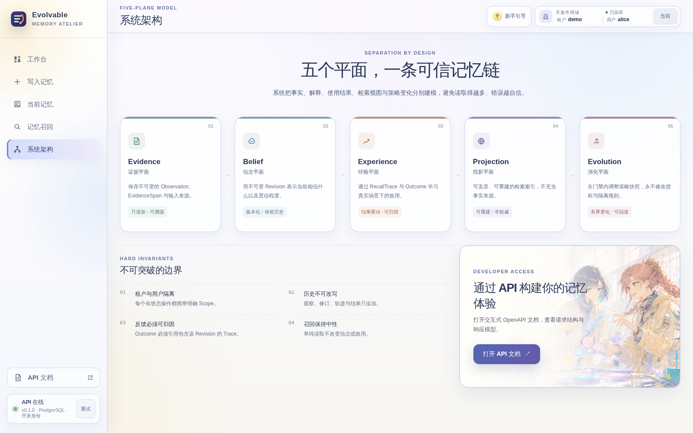

“被召回”不能成为“更可信”的理由
朴素记忆系统常把原始对话、当前信念、检索排序和使用效果混在一起。某条记忆只要被多次读到，就可能被错误地当成更重要、更正确，形成难以解释的自我强化；更新、撤回和历史回放也随之失去清晰边界。
朴素记忆系统常把原始对话、当前信念、检索排序和使用效果混在一起。某条记忆只要被多次读到，就可能被错误地当成更重要、更正确，形成难以解释的自我强化；更新、撤回和历史回放也随之失去清晰边界。
我把领域模型、应用端口、基础设施适配器、API 与独立前端串成一条可追溯链路：原始观察形成候选和不可变 Revision，召回冻结 Trace，只有引用该 Trace 的真实 Outcome 才能学习上下文效用。


截图来自 0.1.0 本地开发预览实例。当前 PostgreSQL 为权威存储，Milvus 投影已启用；采集过程只浏览现有界面，没有写入记忆、登记使用或改变运行状态。
Observation、EvidenceSpan 与 Candidate 保存实际观察到的内容、出处和候选解释，不提前把输入包装成永久事实。
MemoryRecord、不可变 MemoryRevision 与 BeliefState 表达“当前相信什么”，并保留发生时间与系统获知时间。
RecallTrace、OutcomeEvent 与 UtilityEstimate 把一次召回和后续真实结果关联起来，让效用学习具有可归因证据。
词法与 Milvus 只提供候选，PostgreSQL 再校验 Scope 和双时间可见性；Context Projection 冻结最终上下文与摘要指纹。
StrategySnapshot、受限提案和追加式实验状态机允许策略演进，但激活与回滚只能经过内部编排路径。
列举、查询和召回始终只读；“系统读过它”不会增加信念或效用，只有真实 Outcome 才能形成学习信号。
在明确的 tenant、subject、action 与 purpose 下记录原始证据；Scope 内幂等键保证重试稳定，冲突输入被显式拒绝。
候选被接受后形成不可变 Revision；双时间模型同时回答“当时何时有效”和“系统当时知道什么”。
相关性、上下文、信念、历史 Outcome 效用与新鲜度共同排序，随后冻结时间边界、策略版本、分数组成和 Trace ID。
使用回执只证明上下文被采用；引用 Trace 的真实 Outcome 才更新情境效用，并为受治理的策略实验提供证据。
上下文偏好与证据、来源、置信度一同写入；Scope 内幂等与冲突拒绝让客户端重试不制造重复事实。
Revision 只追加不覆盖，查询可同时指定 valid_at 与 known_at，重建过去某时点可见的信念。
Recall Trace 冻结候选、分数和策略；Outcome 必须指向 Trace，避免把无关反馈误记成某条记忆的效果。
精确去重、Revision 归因、预算裁剪和可复现 digest 共同生成 Context Projection；/v1/usages 另行登记实际采用情况。
策略提案、实验与追加式状态转换可追踪；只有内部编排路径可以激活或回滚，外部请求不能直接改线上策略。
授权按 tenant、subject、action、purpose 默认拒绝；Milvus 不保存原始证据和键值，只保留可重建的哈希 Scope 与 Revision 投影。
检索频率只能说明“它常被系统看到”，不能说明“它更真实”。学习入口被限制为可归因的 Outcome，切断流行度与正确性的混淆。
Milvus 只是可重建的候选投影。最终可见性、Scope、Revision 和双时间判断全部回到 PostgreSQL 权威状态。
策略可以在实验边界内调整排序与效用，但不能自我修改隐私、访问控制、保留、删除或审计规则。